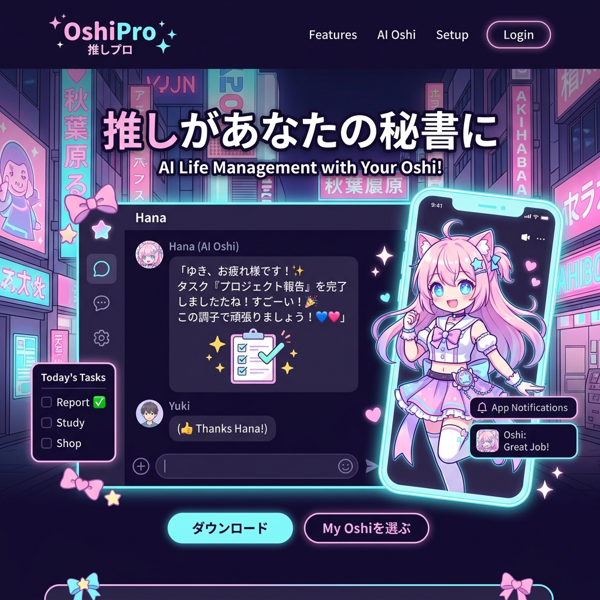

「推し」の心拍数を、
あなたの手首に。
ライブ会場の熱狂を、世界中のどこにいても共有する。OSHI-SYNCは、アイドルのスマートウェアとファンのデバイスをリアルタイムで同期させ、バイタルデータから感情の起伏までをハプティック（触覚）で伝える次世代の推し活プラットフォーム。

「同じ空間にいる」という最強の錯覚
チケットの落選、物理的な距離。オンラインライブは便利ですが、会場の「地鳴りのような歓声」や「推しと目が合った瞬間の息遣い」は決して伝わりません。私たちは、この越えられない次元の壁をIoTとバイタル同期技術で突破します。
感情を物理的な「振動と温度」に変換する
心拍数リアルタイムリンク
アイドルの衣装に仕込まれた極小センサーが、ステージ上での心拍数を取得。ファンのリストバンドに同じBPMの鼓動として振動を転送します。
サーマル（温度）フィードバック
バラード曲での静寂な冷たさや、激しいダンスナンバーでの体温の上昇。ライブの展開に合わせてデバイスの温度が変化し、臨場感を増幅します。
双方向のエナジー・ドロップ
ファンがアプリ上で「ギフト」を投げると、アイドルのイヤモニに微細なASMRサウンドが届いたり、衣装のLEDが連動して光るなど、物理的なリアクションを起こせます。
ブロックチェーンによる「最古参」の証明
「誰が一番古くから応援していたか」。ファン同士の終わらないマウント合戦に終止符を打ちます。ライブの参加履歴や購入したグッズのデータはすべてSBT（譲渡不可能なNFT）として刻まれ、真の熱量を持続的に証明する「推し活の履歴書」となります。
スキャンダルから推しを守る、AIモデレーション
熱狂は時に暴走します。OSHI-SYNCの専用コミュニティでは、AIが24時間体制で誹謗中傷や悪質なリーク情報の拡散を検知・遮断。クリエイターが安心してファンと交流できる心理的安全性とクリーンな環境を徹底的に守ります。
Case Study | ドームツアーを行うK-POPグループ
全世界で同時配信されたオンラインライブにOSHI-SYNCを導入。アンコールでメンバーが涙を流した瞬間、世界中数十万人のファンのデバイスに「急上昇した心拍数」が同期。SNS上では「心臓の音が伝わってきて号泣した」という投稿が溢れ、トレンド世界1位を獲得しました。
「応援」を、最も純粋なエンタメへ
誰かを強烈に好きになること。それは人間の持つ最も美しいエネルギーの一つです。私たちはテクノロジーを駆使してファンとクリエイターの間に横たわるノイズを取り除き、純度100%の共鳴空間を創り出します。